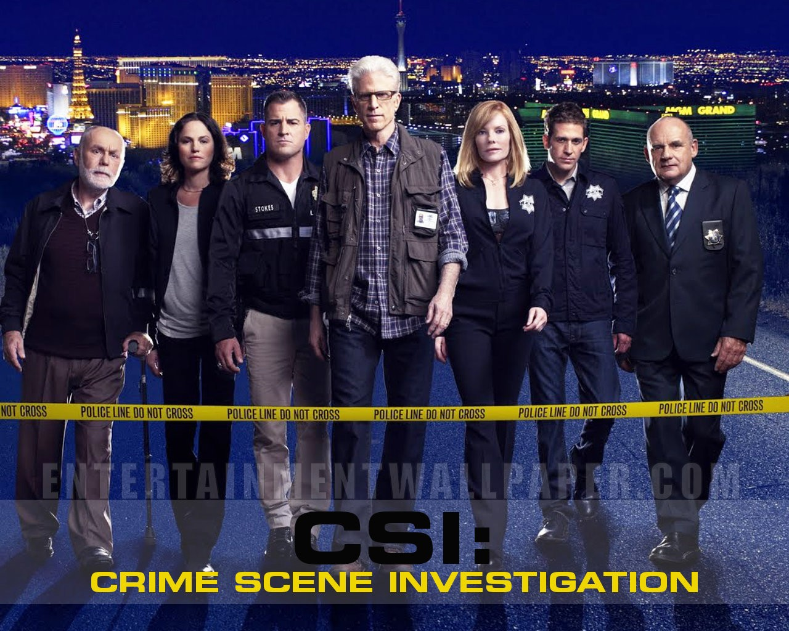

Vencedor 2010
CSI: Crime Scene
Investigation
Investigation
CSI: Crime Scene Investigation

Ano: 2000
País de origem: Estados Unidos
Direção: Anthony E. Zuiker
Elenco: William Petersen,
Marg Helgenberger,
Jorja Fox,
Gary Dourdan,
George Eads
Gênero: Policial,
Drama
Música: Pete Townshend
Classificação: 14 anos
Número de temporadas: 16

Vencedor 2011
Boardwalk Empire
Boardwalk Empire
Ano: 2010
País de origem: Estados Unidos
Direção: Terence Winter
Elenco: Steve Buscemi, Kelly Macdonald, Michael Shannon
Gênero: Drama, Histórico, Policial
Música: Howard Shore
Classificação: 14
Número de Temporadas: 5
Vencedor 2012
Game of Thrones
Game of Thrones

Ano: 2011
País de origem: Estados Unidos
Direção: David Benioff, D.B. Weiss
Elenco: Kit Harington, Emilia Clarke, Peter Dinklage
Gênero: Drama, Fantasia
Música: Ramin Djawadi
Classificação: 16 anos
Número de Temporadas: 8
Vencedor 2013
Game of Thrones
Vencedor 2014
Game of Thrones
Vencedor 2015
Game of Thrones
Vencedor 2016
Game of Thrones
Vencedor 2017
Westworld
Westworld

Ano: 2016
País de origem: Estados Unidos
Direção: Jonathan Nolan, Lisa Joy
Elenco: Evan Rachel Wood, Thandie Newton, Jeffrey Wright
Gênero: Ficção científica, Faroeste
Música: Ramin Djawadi
Classificação: 16 anos
Número de Temporadas: 2
Vencedor 2018
Game of Thrones